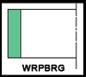

Features
Guide ring WRPBRG is a PTFE+ Bronze strip available in long length and cut to the size.
Composition
| Material | Code |
|---|---|
| PTFE+ Bronze compound | TB40(Green Colour) |
| PTFE+ Bronze compound | TB40M(Dark Brown) |
| Properties | Application |
|---|---|
| Low friction, free of stick slip. | Mobile Hydraulics. |
| High abrasion resistance. | Injection moulding machines. |
| Wide temperature Range. | Machine tools. |
| Good thermal conductivity. | Piston Accumulator. |
| Low wear and high extrusion resistance. | Control and regulating apparatus. |
| Wide fluid application range. | |
| Resistance against cold flow. | |
| Chamfered profile edges prevent pressing of edge in the corner radii of the housing groove. |
General Technical Data
| Maximum speed | Load bearing capacity |
|---|---|
| 5 m/s | 15 N/mm² at 20 °C |
| 10 N/mm² at 60 °C | |
| 5 N/mm² at 120 °C | |
| (permitted specific surface pressing*) |
* The permissible load of the guide strip is calculated from the projected area multiplied by the permissible specific surface pressing. The non linear contact pressure distribution, produces by the load with relation to temperature and tolerances, is taken into account in the value of the permissible load. The material is compatible with hydraulic mineral oil, lubricating oil, water based and synthetic fire resistant fluids and lubricating grease. Although the material is rated at 200°C, the recommended maximum temperature for bearing application is 60°C.
Catalogue